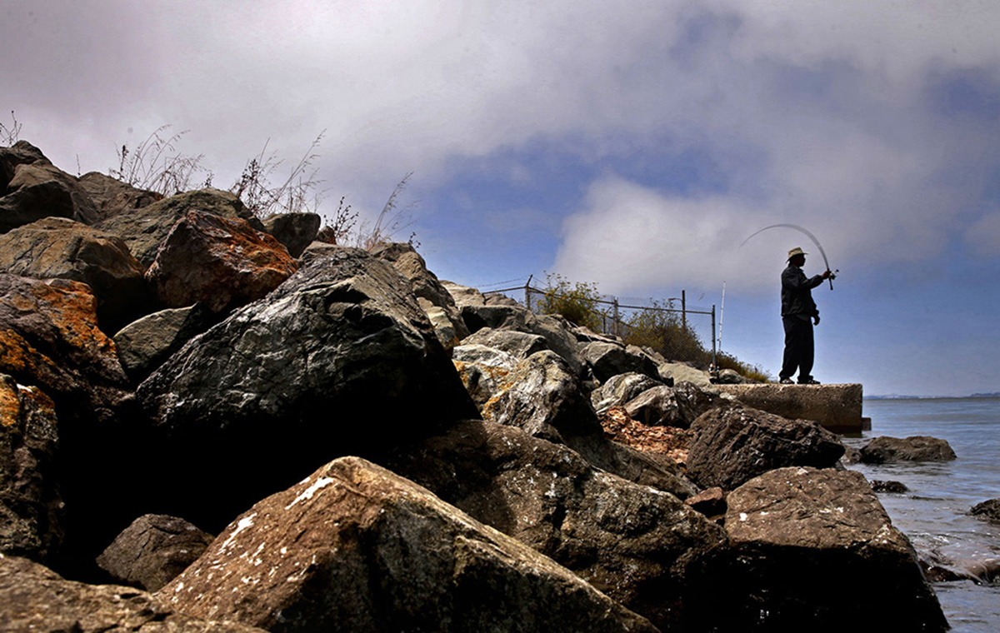

Rising reality: defying the tides
Roland Baham of Oakland tries his luck off the eastern shoreline of Treasure Island in San Francisco, which is being transformed with an eye to sea level rise.
The California coast is part of one of the most productive fisheries in the world. Thanks to its particular north-south orientation with the ocean on its eastern side, winds that run southward down the West Coast push surface water offshore, allowing deeper nutrient-rich water to come up and feed seaweed and phytoplankton. That sets the food chain in motion for zooplankton, small fish, large fish and on up to marine mammals and fish-eating humans.
That same incredibly rich ecosystem has experienced a profound set of disruptions lately, mostly in the form of warmer water temperatures, sending the Northern California seafood industry into crisis mode. The Dungeness crab fishery suffered a historic delay last year; Chinook salmon are unable to return to the ocean from their river spawning grounds thanks to the drought; sea urchin are starving without enough kelp to eat; farmed oysters are threatened by ocean acidification; and squid and sardines are showing up in completely unusual places with diminished populations.
Is this the new normal?


The causes for the recent fishery disasters and near-disasters are complex but interrelated. The combination of last year’s El Niño and a persistent patch of warm water near Alaska that some scientists now call the North Pacific Marine Heat Wave — though it’s more popularly known as the Blob—caused toxic algae blooms to spike and species to migrate erratically.
“Temperature really impacts the growth of many of these species. They’ve evolved in a very specific temperature range and suddenly that’s getting out of whack,” says Toby Garfield, director of the Environmental Research Division at the NOAA Southwest Fisheries Science Lab. “It’s really impacting their growth and development in ways that we’re just beginning to understand.”
There’s no proof that global warming was the cause of the Marine Heat Wave, Garfield says, but it’s definitely behind the ocean acidification that is affecting oysters and threatens other shellfish populations. Some say it even helped maintain a ridge of high pressure over it that was a contributing factor in the five-year drought.
“Weather and climate are two very closely related things that are difficult to tease apart. What is short term variable weather versus long-term climate change?” said Garfield. “Almost any scientist you talk to would say, yes the climate is changing and we’re seeing a lot of variability...Most agencies are working very hard to understand what these changes are.”
The impact on our dinner plates has already been felt, in the high cost of Chinook salmon during summer barbecues and the loss of Dungeness crab during the holidays last year — though signs are positive that the Bay Area’s favorite crustacean will return to Thanksgiving celebrations this year.
The impact on fisheries has been even greater. When it finally opened, last year’s crab harvest was worth about half of the average of the previous five years, at $37 million. The Chinook salmon harvest dropped 68 percent between 2013 and 2015, and fishers think the 2016 numbers will probably be worse.

The state’s overall squid harvest dropped by 64 percent between 2014 and 2015 partly because of El Niño, though Northern California’s catch has been higher than usual after the warm waters pushed squid up the coast. Last year fishers brought almost 3 million pounds of squid into Oregon, which hadn’t happened since the 1980s, said Cyreis Schmitt at Oregon Department of Fish and Wildlife. Processors had to truck equipment up from California to handle the squid.
Worst off are Pacific sardines and North Coast red sea urchin. In the first half of this year, Northern California’s red sea urchin harvest was only at one-tenth of what it was at the same time in 2013 and 2014 because of lack of kelp growth and competition with purple urchins. Fishery experts worry that divers who collect the spiny invertebrates by hand will give up altogether, now that the good ones are sparse.

The Pacific sardine population has also been literally decimated, at only one-tenth of what it was in 2007, when the fishery was worth $8.2 million. That has more to do with natural fluctuations in the stock. though recent warm water conditions caused both sardines and squid, which usually spawn off of California, laying eggs in Oregon and Alaska, respectively.
The Marine Heat Wave not only has been a heater for the ocean, it was in a zone of atmospheric high pressure that diverted storms. Since wind and waves regularly transfer heat from the ocean, fewer storms meant the ocean couldn’t stay cool. That created a feedback loop.

Less wind also means not as much upwelling and fewer food sources for shellfish, like urchin and algae, and other marine animals.
Scientists thought the Marine Heat Wave had gone away, but it reappeared last month of the coast of Alaska. So far, it’s not influencing ocean temperatures in our area as much as it did in 2014 and 2015, when they were 8 to 10 degrees warmer than usual. While ocean temperatures were higher over the summer, they have cooled back to mostly normal.
Garfield said the things to watch for now with the Marine Heat Wave is how much area it covers, how deep it goes underwater and how close to shore it is.

Though the changes to the ocean have been unnerving and costly, there are reasons to look up. In addition to cautious optimism from the California Department of Fish and Wildlife that we’ll have a safe and normal Dungeness crab season, salmon may rebound next spring because of last year’s mildly wet winter — and because organizations like Golden Gate Salmon Association have made efforts like trucking baby salmon to the ocean.
Others in the fishery are taking proactive steps, such as Hog Island Oyster Co., which is opening its own hatchery in Humboldt Bay in the hopes of being better prepared for ocean acidification caused by carbon emissions.

The real question remains, is this the new normal? The average ocean temperature has risen 3 degrees over 30 years.
“It doesn’t sound like a lot but 3 degrees of energy in the ocean is still a lot of energy stored,” said Garfield. “Basically what you’re doing is putting more energy into the ocean and the atmosphere, (so) you can expect changes in weather and changes in ocean circulation.”
<%= t.include("partials/_footer.html") %> <%= t.include("partials/_helloSFC.html") %>